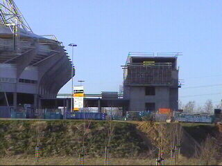
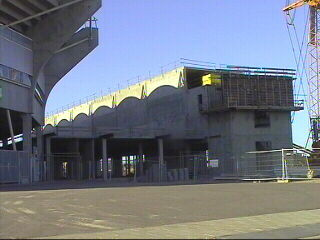
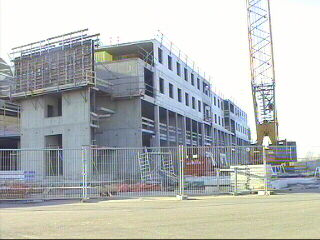
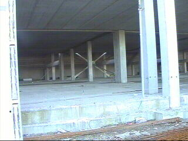

|
Vordering oost-aanbouw 9 maart 2002 |

De hoogbouw staat een heel stuk los van het
stadion maar is daar wel mee verbonden.

De bogen van het stadion werpen hun schaduw
op de discotheek.

De bouw vordert nu zeer snel.

De discotheek krijgt een enorme diepte.
©KPD